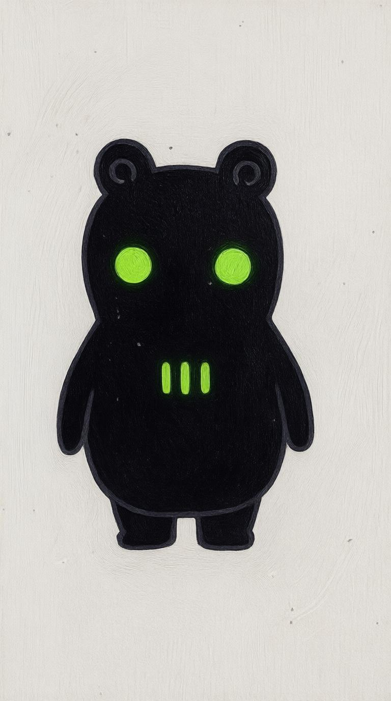
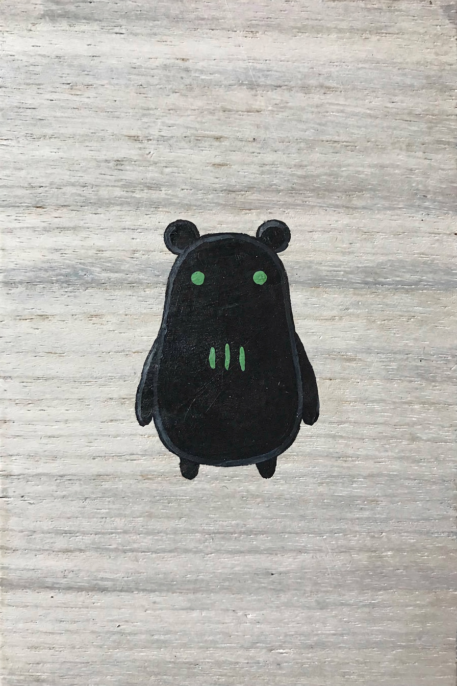

upscaled from canon — versus a fresh render of the same brief

{this.src=s+'?r='+this.dataset.r},600*this.dataset.r)}">
upscaled from canon — keepThe exact design at full resolution, and better painted than the original: brush texture in the black, eyes properly glowing, the pear body and low weight intact, and a small spiral worked into each ear.

{this.src=s+'?r='+this.dataset.r},600*this.dataset.r)}">
fresh render — driftedSame brief, written as precisely as I know how. Flatter, ears detached into circles, eyes shrunk, body reshaped. The design has no drift-resistance in a fresh generation.